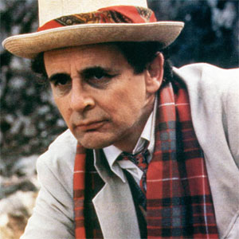

|
|||||||||||||
|
Seventh DoctorPortrayed by Sylvester McCoy.Within the series' narrative, the Doctor is a centuries-old Time Lord alien from the planet Gallifrey who travels in time and space in his TARDIS, frequently with companions. When the Doctor is critically injured, he can regenerate his body; in doing so, his physical appearance and personality change. McCoy portrays the seventh such incarnation, a whimsical, thoughtful character who quickly becomes more layered, secretive, and manipulative. His first companion was Melanie Bush (Bonnie Langford), a computer programmer who travelled with his previous incarnation, and who is soon succeeded by troubled teenager and explosives expert Ace (Sophie Aldred), who becomes his protégée. In his first season, the Seventh Doctor started out as a comical character, engaging in dundrearyisms ("Time and tide melt the snowman," or when partner Mel is kidnapped, "A bird in the hand keeps the Doctor away"), playing the spoons, and making pratfalls, but later started to develop a darker nature and raised the profound question of who the Doctor actually is. The Seventh Doctor era is noted for the cancellation of Doctor Who after 26 years. It is also noted for the Virgin New Adventures, a range of original novels published from 1992 to 1997, taking the series beyond the television serials. |
||||||||||||